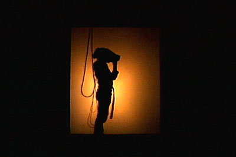

Dawn of the New Everything — Review
2018
"Would you like to be in the art?"
A young woman stood before me. Grad student. I was seventeen, three thousand miles from home. It was the year two thousand.
She led me down a dimly-lit hallway to a utility closet. Inside it was noisy and hot from a Silicon Graphics workstation the size of a mini-fridge. A Virtual Reality suit rested on an armature, wires snaking in all directions. She dressed me in the gear. Standing behind me, she wrapped her arms around me, and gently fastened a strap to my torso.
"This will measure your breathing," she said.
I nodded. She was pretty, I was nervous.
She placed a VR headset over my eyes. I felt its weight bear down on me. After a moment, my eyes adjusted. I was in a different place. At the center, a phosphorous tree. I descended lazily towards the ground.
"Breathe in, and you'll float back up," she said, her voice now somewhere else.
This was a time before cell phones. We relied on landlines and dial-up internet. The plane tickets that brought us across country were delivered to our campus P.O. boxes. E-mail was Pine, accessed via a telnet connection. The machines in the Bard College Cybergraphics lab — where I was studying Computer Graphics — took several hours to render a single frame of animation. And here I was in an immersive, real-time, interactive 3D environment running on exotic, expensive hardware, inside the San Francisco Museum of Modern Art.
It's 2018 now and I recently finished Jaron Lanier's book, Dawn of the New Everything. Lanier invented Virtual Reality long before there were computers capable of realizing it. In the book he looks back at the first wave of VR, the early childhood experiences that led him there, and shares critiques on the direction technology has taken over the past several decades.
Into his survey Lanier intertwines incredible true stories — trip-watching Richard Feynman, who wanted to experience LSD before he died. Sneaking Timothy Leary out of Esselen via a smuggled, professional Leary impersonator. An episode of espionage involving French spies.
A media technology where measurement is more important than display.
VR has gone through several waves, but until now has been too expensive, too clunky, to appeal to a wide audience. Looking at most of the consumer hardware available today, it could be easy to assume that VR is all about the headset, the immersive visuals. A video game taken to another level. Lanier argues that visuals are secondary, and that the real magic of a virtual world is being able to interact with it. Push on it. Experience it with other people.
In the book's more technical chapters, Lanier shows that despite shockingly primitive graphics, the input devices of early VR were far more sophisticated than what's generally available today. Devices from the nineteen eighties like the Data Glove, manufactured by Lanier's company, VPL. The Data Glove captures subtle movements of the hand, and its position in the world, enabling a user to grasp an object (or play a virtual instrument). There were also haptics rigs — robotic contraptions that provide force-feedback so realistic a doctor can feel and manipulate a delicate scalpel in a surgical simulation.
High-end VR development has quietly continued in elite circles. Any time you've flown in a plane, or ridden in a train, Lanier says, VR has probably played a role in the design of that experience. Surgeons still train in VR. Pilots clock hours in simulators. VR didn't die after the first wave, but it has remained largely out of view of most people. The VR that is reaching consumers today is, in Lanier's view, incomplete.
Reality, Lanier says, is something that can be experienced with other people. Sharing the experience is what sets VR apart from a lucid dream, or hallucinogens. (You can get high with other people, but your hallucinations are not objectively the same.) To this end, Lanier emphasizes the importance of avatars — how you appear in the virtual world.
In order to place people in virtual worlds, VPL invented the motion capture suit — used today to create Hollywood special effects like Andy Serkis acting out the character Gollum in The Lord of the Rings. Lanier relays the magic of encountering a friend in VR, knowing instantly who it is by the way they move, despite the fact that they're represented by only a simple collection of dots.
VR enables us to inhabit avatars completely unlike ourselves — like a jellyfish. Or a teapot. In one example Lanier describes the ease with which people adopt tails in VR; whipping them around, hitting targets. It's as though the brain has a deep memory for the phylogenetic tree, casually mapping our senses to creatures we evolved from. Avatars provide a means to experience VR with other people, but they are also a vehicle for introspection; a way to experience consciousness detached from our physical bodies.
Lanier, comically, offers over thirty definitions of VR throughout the book. One that resonates with me is that VR is, "a media technology where measurement is more important than display." Our body's sensory inputs are feelers into the world, tiny scientists gathering evidence to construct our reality. In order to create a virtual reality, our senses — our bodies — must be measured so that we can be given an alternate experience, one that we can share with others.
He also sees a lurking danger — VR as the ultimate skinner box; a behaviorist dystopia where people are fed an alternate world so that they might be controlled. Whether or not you agree with Lanier, his voice is refreshing. A contrarian take in contrast with the exuberance of today's tech world — continuing the thread of his 2013 book, Who Owns the Future?
In Dawn of the New Everything we're shown how the technological world we live in today is only one of many possible outcomes. There are other paradigms, languages, structures — possibly lost to time. Or maybe they're paths we'll take back up again, headed in a new direction.

After a while — hard to say how long — the grad student helped me out of the gear. The first thing I saw as the headset came off were her eyes, framed by dark bangs. The wooly fibers of her sweater. I was still floating.
I managed an awkward, "Thanks!", and went off to find my friend Jacques in the central atrium of the museum. He had been watching me through a translucent scrim, the visuals I saw projected onto a large gallery wall. The projection was now showing the virtual world on autopilot, the bodysuit I wore was lifeless on its harness behind the scrim.
We spent the rest of our trip exploring a San Francisco not yet transformed by the current tech boom. We took a sunny ride through the hills around Sausalito. Hung out with my brother's hippie friends on the roof of their Haight Ashbury apartment.
Lanier says that the User Experience of VR begins before you put on the gear, and doesn't end until well after it's taken off. The magic of it is the way you see reality when your time in the virtual world is done.